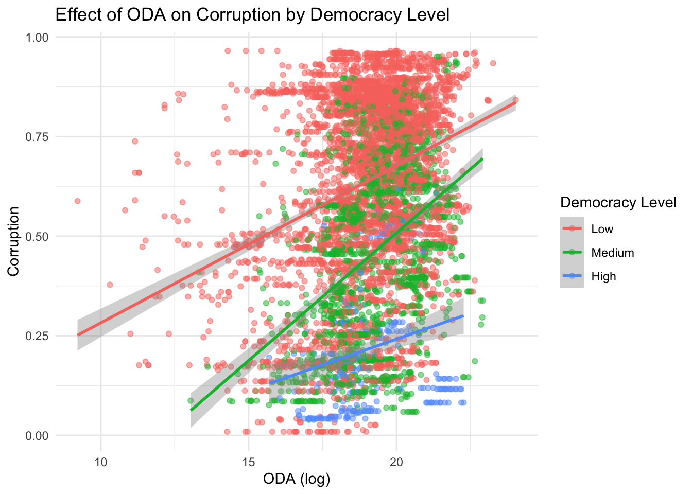

library(readxl)
library(ggplot2)
library(tidyverse)
# Foreign Aid Data
# Net official development assistance and official aid received (constant 2021 US$)
oda <- read.csv("/Users/radnerp/Documents/GitHub/psci3200-radwan/Data/API_DT.ODA.ALLD.KD_DS2_en_csv_v2_14437/API_DT.ODA.ALLD.KD_DS2_en_csv_v2_14437.csv")
oda_long <- oda %>%
pivot_longer(cols = starts_with("X"), names_to = "Year", values_to = "oda") %>%
mutate(Year = as.numeric(gsub("X", "", Year)))
oda_long <- oda_long %>%
select(Country.Name, Year, oda)
oda_long$oda_log <- log(oda_long$oda)
# Net ODA received (% of central government expense)" "Net ODA received (% of central government expense)
oda_centralgovt <- read.csv("/Users/radnerp/Documents/GitHub/psci3200-radwan/Data/API_DT.ODA.ODAT.XP.ZS_DS2_en_csv_v2_18260/API_DT.ODA.ODAT.XP.ZS_DS2_en_csv_v2_18260.csv")
oda_centralgovt_long <- oda_centralgovt %>%
pivot_longer(cols = starts_with("X"), names_to = "Year", values_to = "oda_centralgovt") %>%
mutate(Year = as.numeric(gsub("X", "", Year)))
oda_centralgovt_long <- oda_centralgovt_long %>%
select(Country.Name, Year, oda_centralgovt)
#merging these oda data sets
merged_oda <- full_join(oda_long, oda_centralgovt_long, by = c("Country.Name", "Year"))
# Democracy and Corruption Data
#install.packages("devtools")
#devtools::install_github("vdeminstitute/vdemdata")
library(vdemdata)
vdem <- vdem
democracy <- vdem %>%
select(country_name, year, v2x_libdem, v2x_corr) %>%
rename(Country.Name = country_name,
Year = year,
Democracy = v2x_libdem,
Corruption = v2x_corr)
# World Bank covariates
wdi <- read.csv("/Users/radnerp/Documents/GitHub/psci3200-radwan/Data/P_Data_Extract_From_World_Development_Indicators/d8d82a05-12e6-4d02-a38c-6491ab27c61c_Data.csv")
# Load necessary library
library(tidyverse)
# Read in the CSV
wdi <- read.csv("/Users/radnerp/Documents/GitHub/psci3200-radwan/Data/P_Data_Extract_From_World_Development_Indicators/d8d82a05-12e6-4d02-a38c-6491ab27c61c_Data.csv")
# Step 2: Reshape and clean
wdi_long <- wdi %>%
pivot_longer(
cols = matches("^X\\d{4}"), # Columns like X1962..YR1962.
names_to = "Year",
values_to = "value"
) %>%
mutate(
Year = as.numeric(str_extract(Year, "\\d{4}")), # Extract year number
value = na_if(value, ".."), # Replace ".." with NA
value = as.numeric(value) # Convert to numeric
) %>%
filter(Series.Name != "" & !is.na(Series.Name)) %>% # Remove blank series names
select(Country.Name, Series.Name, Year, value)
# Step 3: Pivot wider so each series becomes a column
wdi_wide <- wdi_long %>%
pivot_wider(
names_from = Series.Name,
values_from = value,
values_fn = ~ first(na.omit(.)) # Pick the first value in case of duplicates
)
#Large merge
merged_data <- merged_oda %>%
full_join(democracy, by = c("Country.Name", "Year")) %>%
full_join(wdi_wide, by = c("Country.Name", "Year"))
# remove rows with missing values for main variables
remove_na <- merged_data %>%
filter(!is.na(Democracy) & !is.na(oda_log) & !is.na(Corruption))
#lagging my variable for corruption by two years for oda to take place
final_data <- remove_na %>%
arrange(Country.Name, Year) %>%
group_by(Country.Name) %>%
mutate(
lag_oda_log = lag(oda_log, 2),
lag_oda_centralgovt = lag(oda_centralgovt, 2),
lag_Democracy = lag(Democracy, 2)
) %>%
ungroup()
# democracy groups for visual
final_data <- final_data %>%
mutate(
Democracy_Group = cut(
lag_Democracy,
breaks = c(0, 0.33, 0.66, 1),
labels = c("Low", "Medium", "High"),
include.lowest = TRUE
)
)
#renaming columns
data <- final_data %>%
select(Country.Name, Year, lag_oda_log, lag_Democracy, Corruption, Democracy_Group, `GDP per capita (current US$)`, `Tax revenue (% of GDP)`, `Trade (% of GDP)`, `Inflation, GDP deflator (annual %)`, `Exports of goods and services (% of GDP)`, `Central government debt, total (% of GDP)`, `Labor force with basic education (% of total working-age population with basic education)` ) %>%
rename(country = Country.Name,
year = Year,
oda = lag_oda_log,
democracy = lag_Democracy,
corruption = Corruption,
democracy_group = Democracy_Group,
gdp_capita = `GDP per capita (current US$)`,
tax_revenue = `Tax revenue (% of GDP)`,
trade = `Trade (% of GDP)`,
inflation = `Inflation, GDP deflator (annual %)`,
exports = `Exports of goods and services (% of GDP)`,
debt = `Central government debt, total (% of GDP)`,
labor_education = `Labor force with basic education (% of total working-age population with basic education)`) %>%
mutate(gdp_capita = log(gdp_capita))PSCI 3200 Final Project Expanded Research Design
Introduction
The recent slashing of the United States Agency for International Development (USAID) by the Trump administration has re-sparked the debate about whether countries should be responsible for distributing and providing foreign aid. Although this question about whether countries like the United States have a duty to provide aid is more of a philosophical question regarding global justice, this discussion can also be extended to the effectiveness of foreign aid. Foreign aid plays a critical role in shaping political and economic development with the intention of supporting state-building, promoting good governance, and reducing poverty across the Global South, but the actual impact of foreign aid remains ambiguous. A body of literature focuses on the effects that foreign aid has on corruption, where scholars argue that aid can promote transparency and reduce corruption by providing resources and incentives for institutional reform, while others argue that aid fosters dependency, facilitates rent-seeking, and undermines domestic accountability. However, the effects of foreign aid are largely believed to be influenced by institutional and contextual factors. My main research question concerns foreign aid’s impacts on corruption and using institutional quality as a moderator. Specifically, how does foreign aid impact corruption in developing countries, and how does regime type, or the level of democracy in a country, moderate this effect?
An early study by Burnside and Dollar (2000) found that foreign aid has a positive impact on growth in developing countries with good fiscal, monetary, and trade policies but has little effect in the presence of poor policies. Similarly, a study by Okada and Samreth found that foreign aid generally reduces corruption, and its reduction effect is greater in less corrupt countries. Other research focuses on the effects that foreign aid has on state capacity. For example, Bräutigam and Knack (2004) found that higher aid dependence is associated with weaker bureaucratic quality and greater corruption, particularly in Sub-Saharan Africa. Similarly, Morrison (2007) and Knack (2009) show that states dependent on foreign aid or natural resources have lower-quality governance due to weakened incentives for accountability and reform. In other words, recent studies find that the effects of foreign aid can have negative impacts on state capacity and governance. Andersen, Johannesen, and Rijkers (2022) also used data on offshore banking activity and found that disbursements of foreign aid are associated with increased deposits in offshore accounts controlled by elites in the recipient countries. This pattern is especially pronounced in non-democratic and high-corruption contexts, offering robust evidence of elite capture of aid flows. To address these risks, some donors use bypass aid, routing funds through NGOs or multilateral agencies rather than recipient governments. Dietrich (2013) shows that donors strategically bypass state institutions in countries with low governance quality or high corruption levels, showing that regime type moderates the relationship between aid and governance outcomes, not just in terms of effectiveness, but also in terms of how aid is delivered. Despite the rich literature on foreign aid and corruption, few studies have directly tested how democracy moderates the relationship between foreign aid and corruption. I hypothesize that foreign aid reduces corruption in democracies, where institutional constraints and accountability mechanisms are stronger, but increases corruption in autocracies, where aid is more easily captured by elites.
Hypothesis
I hypothesize that foreign aid causes an increase in corruption in countries with low democracy scores but decreases corruption in countries with high democracy scores. I base this hypothesis on the fact that earlier research indicates that foreign aid has different circumstances where it can succeed in outcomes like economic growth and corruption. The main reason that I expect a negative effect on corruption from an interaction between foreign aid and democracy is because of the idea that democracies have greater institutions that ensure transparency and accountability, leading to greater allocation of resources and less corrupt practices. However, countries that have less democratic institutions can expect to have weaker mechanisms that monitor the allocation of foreign aid and resources in general. This argument is also supported by past research that I cited above, where stronger institutions have a greater effect on foreign aid success and economic growth. As a result, democratic institutions, as opposed to authoritarian ones, will have a greater impact on reducing corruption, whereas non-democratic regimes will be bolstered by foreign aid, increasing corruption I also plan to conduct a robustness check by testing whether foreign aid can increase state capacity in democracies, creating another test for the impact of foreign aid on state institutions.
Data
I am using panel data from the World Bank Group, World Development Indicators (WDI), and V-Dem. To measure foreign aid, I am using official development assistance data from the World Bank and OECD. To measure corruption and democracy, I am using variables from V-Dem. My control variables are from the world development indicators.
# basic plot
data %>%
filter(!is.na(oda), !is.na(corruption), !is.na(democracy_group)) %>%
ggplot(aes(x = oda, y = corruption, color = democracy_group)) +
geom_point(alpha = 0.5) +
geom_smooth(method = "lm", se = TRUE) +
labs(
title = "Effect of ODA on Corruption by Democracy Level",
x = "ODA (log)",
y = "Corruption",
color = "Democracy Level"
) +
theme_minimal()
The graph titled “Effect of ODA on Corruption by Democracy Level” supports my hypothesis to an extent. It supports it by demonstrating that countries more foreign aid for low democracy countries is associated with a strong increase in corruption. However, there also appears to be a positive effect for countries with high levels of democracy, but weaker than low level democracies. Thus, although low democracy countries have a strong effect of corruption with foreign aid, high democracy countries still experience an increase in corruption with foreign aid.
#descriptive statistics
library(stargazer)
stats <- data %>%
select(oda, corruption, democracy, gdp_capita, tax_revenue, trade, inflation, debt, labor_education)
stargazer(stats, type = "html", title = "Descriptive Statistics", out = "/Users/radnerp/Documents/GitHub/psci3200-radwan/stats.html",
covariate.labels = c("Official Development Assistance", "Corruption Level", "Liberal Democracy Level", "GDP per Capita", "Tax Revenue (%GDP)", "Trade (%GDP)", "Inflation", "Debt", "Labor Education"))
<table style="text-align:center"><caption><strong>Descriptive Statistics</strong></caption>
<tr><td colspan="6" style="border-bottom: 1px solid black"></td></tr><tr><td style="text-align:left">Statistic</td><td>N</td><td>Mean</td><td>St. Dev.</td><td>Min</td><td>Max</td></tr>
<tr><td colspan="6" style="border-bottom: 1px solid black"></td></tr></table>#regression model
no_control_regression <- lm(corruption ~ oda * democracy, data)
control_regression <- lm(corruption ~ oda * democracy + gdp_capita + tax_revenue + trade + inflation + debt + labor_education + country + year, data)
stargazer(no_control_regression,
type = "text", # change to "latex" or "html" if needed
title = "Effect of ODA and Democracy on Corruption (No Controls)",
covariate.labels = c("ODA", "Democracy", "ODA × Democracy"),
dep.var.labels = "Corruption",
digits = 3,
no.space = TRUE)
Effect of ODA and Democracy on Corruption (No Controls)
===============================================
Dependent variable:
---------------------------
Corruption
-----------------------------------------------
ODA 0.041***
(0.002)
Democracy -1.151***
(0.153)
ODA × Democracy 0.029***
(0.008)
Constant -0.055
(0.046)
-----------------------------------------------
Observations 6,333
R2 0.308
Adjusted R2 0.308
Residual Std. Error 0.210 (df = 6329)
F Statistic 940.358*** (df = 3; 6329)
===============================================
Note: *p<0.1; **p<0.05; ***p<0.01The regressions without controls show interesting results. An interaction between foreign aid and democracy, meaning when both increase, shows that there is a significant increase in corruption by 0.029 percentage points. However, corruption increases by 0.041 when democracy is low and foreign aid increases. Similarly, holding aid constant, democracy is associated with a decrease in corruption.
stargazer(control_regression,
type = "text",
title = "Effect of ODA and Democracy on Corruption (With Controls)",
covariate.labels = c("ODA",
"Democracy",
"GDP per Capita",
"Tax Revenue",
"Trade Openness",
"Inflation",
"Debt",
"Labor Education",
"ODA × Democracy",
"Constant"),
omit = c("country", "year"),
omit.labels = c("Country FE", "Year FE"),
dep.var.labels = "Corruption",
digits = 3,
no.space = TRUE)
Effect of ODA and Democracy on Corruption (With Controls)
===============================================
Dependent variable:
---------------------------
Corruption
-----------------------------------------------
ODA 0.014
(0.014)
Democracy 0.156
(0.565)
GDP per Capita 0.017
(0.021)
Tax Revenue 0.004
(0.003)
Trade Openness 0.0005
(0.0004)
Inflation -0.001
(0.001)
Debt 0.0004
(0.0004)
Labor Education -0.002***
(0.001)
ODA × Democracy -0.015
(0.028)
Constant 9.125***
(3.093)
-----------------------------------------------
Country FE Yes
Year FE Yes
-----------------------------------------------
Observations 339
R2 0.948
Adjusted R2 0.938
Residual Std. Error 0.063 (df = 282)
F Statistic 91.825*** (df = 56; 282)
===============================================
Note: *p<0.1; **p<0.05; ***p<0.01The results for my hypothesis appear null when adding controls. An interaction between aid and democracy decreases corruption slightly, but the effect is insignificant. When democracy is held constant, foreign aid increases corruption without significance, and when aid is held constant, corruption, counter intuitively, increases corruption.
Note that I cannot figure out why my descriptive statistics table is not outputting on the html file. Please accept this copy and paste for now, thank you *
Research Design
Main Regression Model
Regression Model
I estimate the following panel data regression to test my hypothesis:
\[ Corruption_{it} = \beta_0 + \beta_1 Aid_{it} + \beta_2 Democracy_{it} + \beta_3 (Aid_{it} \times Democracy_{it}) + \gamma_1 \text{GDP per Capita}_{it} + \gamma_2 \text{Tax Revenue}_{it} + \gamma_3 \text{Trade}_{it} + \gamma_4 \text{Inflation}_{it} + \gamma_5 \text{Debt}_{it} + \gamma_6 \text{Labor Education}_{it} + \varepsilon_{it} \]
Where:
- \(Corruption_{it}\) is the level of corruption in country i at time t (measured using V-Dem)
- \(Aid_{it}\) is the amount of net official development assistance received.
- \(Democracy_{it}\) represents the level of liberal democracy (from V-Dem).
- \(Aid_{it} \times Democracy_{it}\) is the interaction term that tests whether regime type moderates the effect of foreign aid on corruption.
- \(\text{GDP per Capita}_{it}\) is the log of GDP per capita.
- \(\text{Tax Revenue}_{it}\) is tax revenue as a percentage of GDP.
- \(\text{Trade}_{it}\) is trade openness as a percentage of GDP.
- \(\text{Inflation}_{it}\) is the annual inflation rate.
- \(\text{Debt}_{it}\) is the central government debt as a percentage of GDP.
- \(\text{Labor Education}_{it}\) is a proxy for human capital (e.g., average years of schooling or education level in the labor force).
- \(\varepsilon_{it}\) is the error term.
I include gdp per capita, tax revenue, trade openness, debt level, and labor education as covariates because they have the potential to influence foreign aid and corruption. GDP per capita is included because wealthier countries tend to have stronger institutions and lower corruption, and may receive different levels of aid. Tax revenue (% of GDP) reflects state capacity and fiscal accountability, which influence both aid dependency and corruption. Trade openness (% of GDP) captures economic integration, which can either reduce corruption through transparency or increase it through illicit flows. Debt (% of GDP) indicates fiscal stress and governance quality, affecting both aid allocation and corruption risks. Labor force education proxies for human capital and civic engagement, which can be linked to less corruption and potentially higher aid capacity.
Since my hypothesis implies a causal relationship, that foreign aid affects corruption differently depending on regime type, there are several threats to interpreting the coefficient on the aid-democracy interaction as a causal effect. First is reverse-causality, where corruption may influence where foreign aid goes, such as the example of bypass aid. Another threat is omitted variable bias, where I cannot include all potential variables like path dependency theory of colonial institutions or other aspects of institutional quality, like foreign influence. Although I attempt to mitigate these threats by including key control variables and country and year fixed effects, establishing a clean causal effect remains challenging.
Empirical Extension
One concern in interpreting the relationship between foreign aid, democracy, and corruption is the confounding effect of state capacity. Countries with weak bureaucratic institutions may be less likely to get foreign aid and more prone to corruption, potentially biasing the estimated relationship between aid and governance. I can conduct a robustness check that restricts the sample to countries with low-state state capacity, using a state capacity index from V-Dem. This empirical extension may allow me to rule out the possibility that variation in state capacity rather than democracy is driving differences in corruption outcomes.